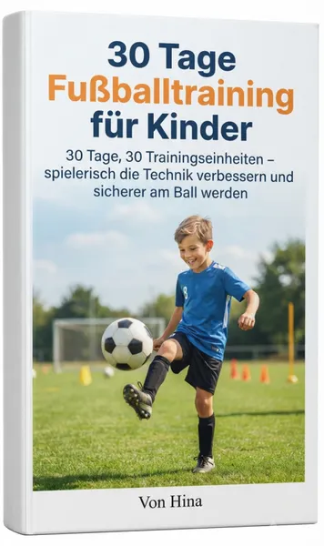

30 Tage Fußballtraining für Kinder
Produktprofil · Marktplatz-Daten 2026-10-14 · Verkaufsseiten-Recherche 2026-10-14 · Kategorien: Sport, Hobby & Craft
- 30 Tage Fußballtraining für Kinder ist ein/e E-Book in Sport und Hobby & Craft, vertrieben über den Digistore24-Marktplatz von Anbieter Book2Book, gelistet seit 2026-09-08.
- Listenpreis $17.99; Digistore24 meldet — Checkout-Konversion, — Stornierungsquote und 60 % Affiliate-Provision.
- Verdienst pro Verkauf (Affiliate): $10.79 (Anbieter-seitige Statistik, keine Prognose).
Interesse an 30 Tage Fußballtraining für Kinder? Aktueller Preis, Boni und Garantiebedingungen finden Sie auf der offiziellen Seite des Anbieters:
Offizielle Verkaufsseite ansehen
Affiliate-Link (Werbung) — wir verdienen ggf. eine Provision, ohne Mehrkosten für Sie.

Marktplatz-Daten
| Produkttyp | E-Book |
|---|---|
| Preis | $17.99 (Single payment) |
| Affiliate-Provision | 60 % |
| Garantie/Rückgabe | Laut Verkaufsseite des Anbieters — vor dem Kauf auf der offiziellen Seite prüfen |
| Anbieter | Book2Book (gelistet seit 2026-09-08) |
| Marktplatz-Statistiken* | Checkout-Konversion — · Stornoquote — · Verdienst/Verkauf $10.79 |
* Anbieter-seitige Statistiken von Digistore24; sie hängen von der Traffic-Qualität ab und sind keine Prognose.
Marktplatz-Beschreibung des Anbieters
30 Tage Fußballtraining für Kinder Bringe deine Sport- und Parenting-Nischen-Promotions mit einem hochkonvertierenden Jugendtrainingsprogramm auf das nächste Level, das speziell für Eltern, Trainer und Jugendvereine entwickelt wurde. • Produktpreis: 17,99 EUR • Affiliate-Provision: 60 % (Sehr lukrative Auszahlung pro Verkauf) • Zielgruppe: Eltern von Kindern im Alter von 6 bis 14 Jahren, Jugendfußballtrainer sowie Übersungsleiter im Breitensport, die nach strukturierten, motivierenden Trainingsplänen für zu Hause suchen. • Produktformat: Umfassendes digitales eBook mit 30 tagesaktuellen, praxisnahen Trainingsmodulen, Technikübungen und Koordinationsübungen. Affiliate-Highlights • Enorme Nachfrage: Hohes Interesse bei Eltern, die die sportliche Entwicklung ihrer Kinder außerhalb des regulären Vereinsbetriebs unterstützen möchten. • Sofort einsatzbereit für Promo: Perfekt geeignet für E-Mail-Marketing-Listen, Sport-Blogs, Parenting-Plattformen und Social-Media-Kanäle. • Starke Conversion-Rate: Professionell optimierte Verkaufsseite, die passgenau auf das Interesse am Jugend-Fußballtraining zugeschnitten ist. Schnapp dir noch heute deinen Affiliate-Link auf Digistore24 und sichere dir eine großzügige Provision von 60 % bei jedem Verkauf!
Von der Verkaufsseite des Anbieters
Seitentitel: 30 Tage Fußballtraining für Kinder - Digistore24
Abschnitts-Überschriften
- 30 Tage Fußballtraining für Kinder
- (eBook)
- Kein komplizierter Trainingsplan
- 30 Tage, die einen Unterschied machen können
- Für Kinder, die Fußball lieben
- Aus „Ich möchte besser werden“ wird „Ich trainiere jeden Tag“
- Kleine Trainingseinheiten statt stundenlangem Fußballtraining
- Das Wichtigste: Spaß am Fußball behalten
- Dein 30-Tage-Fußballtraining
- Jetzt „30 Tage Fußballtraining für Kinder“ sichern
Einstiegstext
Dein Kind liebt Fußball, möchte besser werden, weiß aber nicht immer, was es trainieren soll? Dann ist dieser 30-Tage-Trainingsplan genau das Richtige.
Mit „30 Tage Fußballtraining für Kinder“ bekommt dein Kind einen einfachen und abwechslungsreichen Trainingsplan, der Techniktraining spielerisch in den Alltag bringt – ohne komplizierte Übungen und ohne stundenlanges Training.
Was dein Kind in 30 Tagen trainiert Der Trainingsplan hilft dabei, wichtige Grundlagen am Ball regelmäßig zu üben:
Viele Kinder wollen besser werden, wissen aber nicht, wie sie alleine sinnvoll trainieren können.
Fragen, die die Verkaufsseite beantwortet
- (eBook) Dein Kind liebt Fußball, möchte besser werden, weiß aber nicht immer, was es trainieren soll?
- Der größte Vorteil eines 30-Tage-Plans?
Preisangaben auf der Seite: $10
Recherche-Methode: rohes HTML · 2026 Wörter · Qualität: rich · recherchiert am 2026-10-14. Vollständige Recherche-Datei (MD) ↗
Wie Produkte dieser Art geliefert werden
Allgemeiner Hinweis zu diesem Produkttyp (keine anbieterspezifische Anleitung): E-Books auf Digistore24 werden als digitaler Download geliefert (meist PDF/EPUB): direkt nach dem Checkout erhalten Sie einen Downloadlink oder Mitgliederzugang und können auf jedem Gerät lesen. Für die genaue Anwendung von 30 Tage Fußballtraining für Kinder sind die offizielle Verkaufsseite und die enthaltenen Materialien maßgeblich.
Gut zu wissen
- Keine Garantie-Formulierung in unserer Recherche gefunden — bestätigen Sie das Rückgabefenster auf der offiziellen Seite, bevor Sie kaufen.
- Marktplatz-Zahlen (Preis, Provision, Konversion, Stornoquote) — Quelle: offizielle Digistore24-Marktplatz-API (Affiliate-Sicht), Stand 2026-10-14. Gegenprüfung: Marktplatz-Suche nach Produkt-ID 731192.
- Verkaufsseiten-Zitate — Quelle: https://www.checkout-ds24.com/product/731192, abgerufen 2026-10-14 (Methode: rohes HTML). Verify: offizielle Seite öffnen.
- Garantie / Rückgabe — vom Anbieter festgelegt; vor dem Kauf auf der Verkaufsseite bestätigen.
- Nicht von uns geprüft: Produktqualität, Ergebnisse, Testimonials — kein Praxistest für dieses Listing durchgeführt.
Häufige Fragen zu 30 Tage Fußballtraining für Kinder
Antworten aus dem Marktplatz-Snapshot (2026-10-14) und der Verkaufsseiten-Recherche (2026-10-14); Anbieteraussagen sind inline gekennzeichnet.
Was ist 30 Tage Fußballtraining für Kinder?
30 Tage Fußballtraining für Kinder ist ein Angebot des Typs „E-Book" im Digistore24-Marktplatz, Anbieter: Book2Book, gelistet seit 2026-09-08. Eingepflegt unter Sport und Hobby & Handwerk. Digistore24 wickelt Checkout, Lieferung und Rückgaben ab.
Wie viel kostet 30 Tage Fußballtraining für Kinder?
Der Digistore24-Marktplatz listet es für $17.99 (single payment). Preise legt der Anbieter fest und können sich ändern — der Marktplatz-Eintrag oben zeigt den Schnappschuss; die offizielle Verkaufsseite zeigt den aktuellen Preis.
Gibt es eine Geld-zurück-Garantie für 30 Tage Fußballtraining für Kinder?
Unsere Verkaufsseiten-Recherche hat keine explizite Garantie-Formulierung gefunden. Viele Digistore24-Produkte bieten 60 Tage Geld-zurück, aber das legt jeder Anbieter selbst fest — bestätigen Sie es auf der offiziellen Verkaufsseite, bevor Sie kaufen.
Ist 30 Tage Fußballtraining für Kinder seriös?
Wir bewerten keine Seriosität — wir veröffentlichen überprüfbare Zahlen: Anbieter Book2Book (gelistet seit 2026-09-08), Checkout-Konversion —, Stornoquote —, Affiliate-Verdienst/Verkauf $10.79 (alles Anbieter-seitige Marktplatz-Statistiken). Lesen Sie unsere 6-Punkte-Bewertungsmethode und entscheiden Sie anhand der Zahlen — oder diskutieren Sie 30 Tage Fußballtraining für Kinder auf GitHub.
Wo kann ich 30 Tage Fußballtraining für Kinder sicher kaufen?
Nur über die offizielle Verkaufsseite, die auf dieser Seite verlinkt ist (Checkout und Rückgaben laufen über Digistore24). Prüfen Sie dort Preis und Garantie vor der Bestellung. Der Link ist ein Affiliate-Link — der Kauf unterstützt diese Website ohne Mehrkosten für Sie.
Wie erhalte ich 30 Tage Fußballtraining für Kinder nach der Zahlung?
Der Checkout läuft über Digistore24: Nach der Zahlung erhalten Sie Ihren Zugang oder Download per E-Mail und in Ihrem Digistore24-Kundenkonto. Lieferdetails für diesen Produkttyp: E-Books auf Digistore24 werden als digitaler Download geliefert (meist PDF/EPUB): direkt nach dem Checkout erhalten Sie einen Downloadlink oder Mitgliederzugang und können auf jedem Gerät lesen. Bei Problemen kann der Digistore24-Käufersupport Ihre Bestellung wiederherstellen.
Alle 50 Käuferfragen zu Sport — das komplette Kategorie-FAQ.
30 Tage Fußballtraining für Kinder auf Reddit diskutieren
In Community-Threads vergleichen echte Käufer Erfahrungen. Wir verlinken Communities, keine einzelnen Posts — Threads verschwinden, Subreddits bleiben:
- r/FITNESS — deutschsprachige Community mit Diskussionen zu sport.
- Reddit-Suche nach „30 Tage Fußballtraining für Kinder" — Live-Ergebnisse, von uns nicht beeinflusst.
- Top-„Erfahrungs"-Treffer dieses Jahr — selbst nach Aktualität filtern.
Passendes auf Amazon.de
Physische Produkte und Zubehör, die häufig zusammen mit 30 Tage Fußballtraining für Kinder gekauft werden:
- Sportgeräte auf Amazon.de — Top-Ergebnisse, Amazon-Ranking.
- Bestseller: Sportgeräte — live Liste von Amazon, von uns nicht kuratiert.
Werbung: Als Amazon-Partner verdient DigistorePicks DE an qualifizierten Käufen (Partner-tag adminstorede-21). Amazon setzt eigene Preise und Provisionen (niedrige einstellige Prozente — weit unter den 30–75% der Digistore24-Anbieter). Amazon ist ein Convenience-Angebot für Sachprodukte, kein Ersatz für das digitale Produkt oben.
Ähnliche Angebote in Sport

Lets-Dance.net Partnerprogramm (Tanzschulen) Lets-Dance.net ist eine Online-Plattform, die Tanzschulen dabei unterstützt, von neuen Tanzschülern gefunden zu wer

Pilates&Friends Abo Das Online Pilates Paket Das Pilates&Friends Abo ist die Standardmitgliedschaft, die monatlich, halbjährlich oder jährlich abgeschlo

Abnehmen für 237,60€ – und du kassierst bis zu 125,93€ Provision pro Verkauf! Wusstest du, dass der Markt für Abnehm-Programme jedes Jahr Milliarden umsetzt? Un
![[Live] Sportwetten mit KI | Software | +10% Conversion](../assets/products/56820.webp)
Verdiene ~100€ wiederkehrende Provision pro Sale mit unserer KI-Sportwetten Software Empfehle unser kostenloses Online-Training mit über 10% Sales-Conversion un
Weitere Angebote von Book2Book
Gesamtes Sortiment: Book2Book Anbieter-Hub — alle Listings mit Marktplatz-Daten.

Produktbeschreibung für Digistore24-Affiliates Produktdetails • Produktname: Overlock-Grundlagen für Anfänger • Produkttyp: E-Book (PDF) • Preis: 17,99 € (inkl.

Affiliate-Steckbrief • Produkt: Gitarre lernen ohne Frust (E-Book) • Preis: 17,99 EUR • Provision: 70% • Zielgruppe: Anfänger & Wiedereinsteiger, die ohne g

30 einfache Seifenrezepte zum Selbermachen Entdecke die Kunst des Seifensiedens! Dieser umfassende E-Book-Ratgeber bietet eine sorgfältig kuratierte Sammlung au

Dehnübungen Ganzkörper für Anfänger • Preis: 17,99 € (inkl. MwSt.) • Provision: 60% (Top-Conversion im Fitness- und Gesundheitsschwerpunkt) Kurzbeschreibung für
Gleicher Anbieter auf unserer englischen Website
- UK Foraging For Beginners — $37.99 (Hobby & Craft)
- Monthly Budget Planner (Google Sheets) — $37.99 (Personal Development)
- Garden Planner and Logbook (Printable PDFs) — $37.99 (Home & Garden)
Gleicher Anbieter, englischsprachige Marktplatz-Listings.
30 Tage Fußballtraining für Kinder ist auch gelistet in
Hobby & Handwerk (181 Produkte)
Ähnliche Preislage in Sport

Der ultimative Fitness-Guide 2025 ist ein All-in-One Paket für alle, die Muskeln aufbauen, Fett verbrennen und ihre Ernährung optimieren wollen.
Promi-Fakten • Produkt: "Dehnen für Fußballer" (E-Book) • Preis: 17,99 € • Provision: 60 % (starke Marge für dein Affiliate-Konto) • Zielgruppe: Fußba
Weil Laufen auch Kopfsache ist Dieser Ratgeber gibt dem Leser in kompakter Form hochwirksame Übungen zum psychologisch fundierten Selbstcoaching und mentalen Tr
„Stark ab 40" ist das komplette Trainings- und Ernährungssystem für Männer ab 40 – hochwertiges PDF-E-Book (ca. 50 Seiten) inkl. Bonus-Trainingsplan. Warum
Ähnliche Suchanfragen
Wo Sie es sich ansehen können
Wo Sie es sich ansehen können
Aktuelle Preise, Garantie und Boni finden Sie auf der offiziellen Verkaufsseite:
Offizielle Verkaufsseite ansehen
Das ist ein Affiliate-Link (Werbung) — kaufen Sie darüber, verdienen wir ggf. eine Provision, ohne Mehrkosten für Sie.
Quellen & weiterführende Informationen
- Offizielle Verkaufsseite (aktueller Preis, Garantie, Boni): www.checkout-ds24.com/product/731192 (Affiliate-Link)
- Öffentliche Digistore24-Produktseite: checkout-ds24.com/product/731192
- Vollständige Recherche-Datei (Markdown, versioniert): content/products/59024-30-tage-fu-balltraining-f-r-kinder.md
- Affiliate-Supportseite des Anbieters: book2bookaffiliatesupport.blogspot.com/2026/09/30-tage-fubal
- Marktplatz-Kategorie: Sport
Wie wir Produkte wie 30 Tage Fußballtraining für Kinder bewerten
Sechs Prüfungen, ausschließlich mit offiziellen Marktplatz-Zahlen. Die vollständige Bewertungsmethode lesen · unsere Recherche-Standards & Kennzeichnung.
Fragen oder eigene Erfahrungen mit 30 Tage Fußballtraining für Kinder?
Praxis-Tests veröffentlichen wir erst, nachdem wir ein Produkt selbst gekauft haben — aber Ihre Erfahrung hilft anderen Lesern: Diskussion zu 30 Tage Fußballtraining für Kinder auf GitHub starten/verfolgen. Falsche Zahl gefunden? Korrektur melden — jede Seite zeigt ihre Datenstände, Korrekturen gelten für die ganze Website.